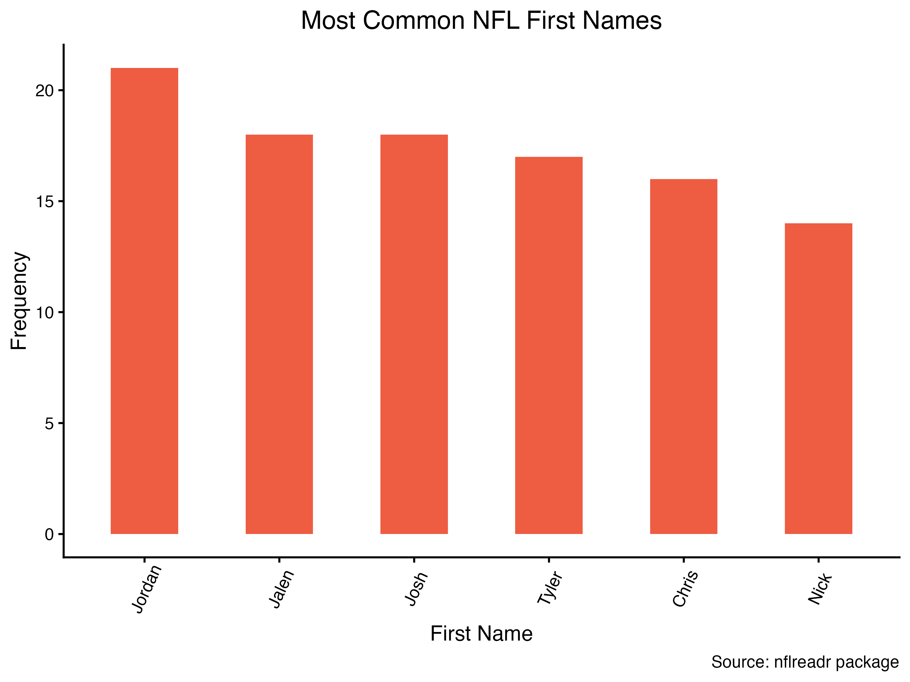
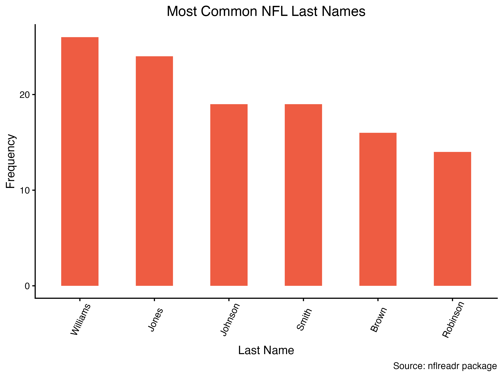
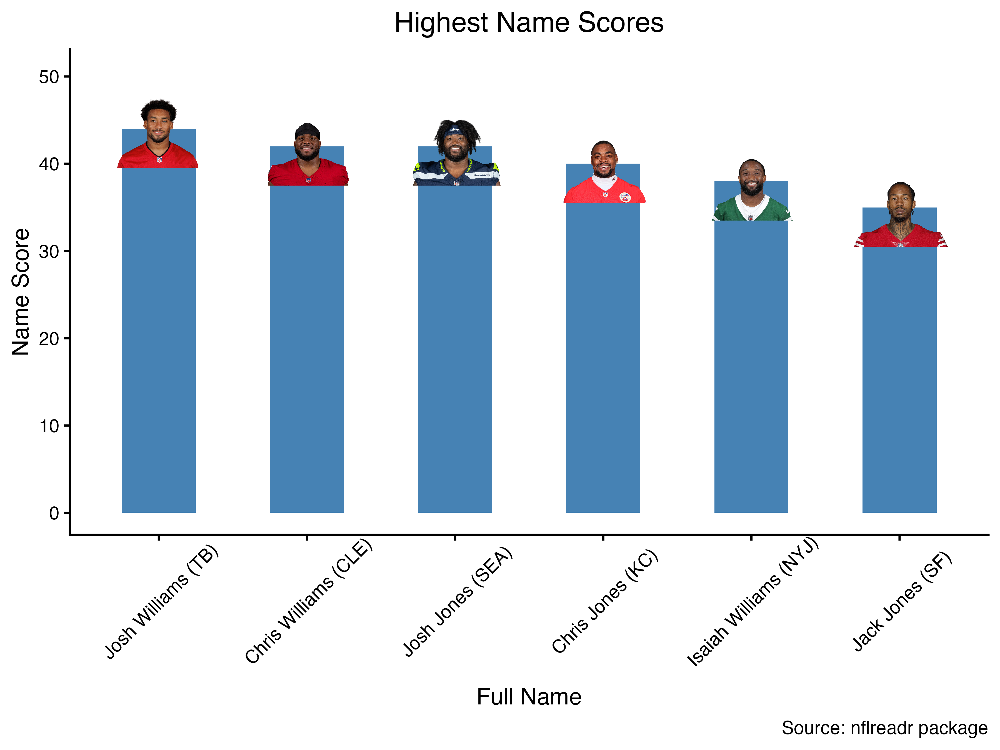
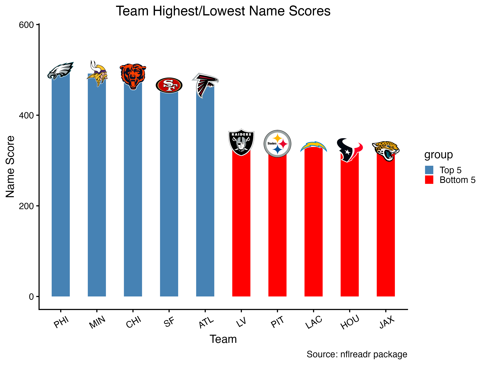
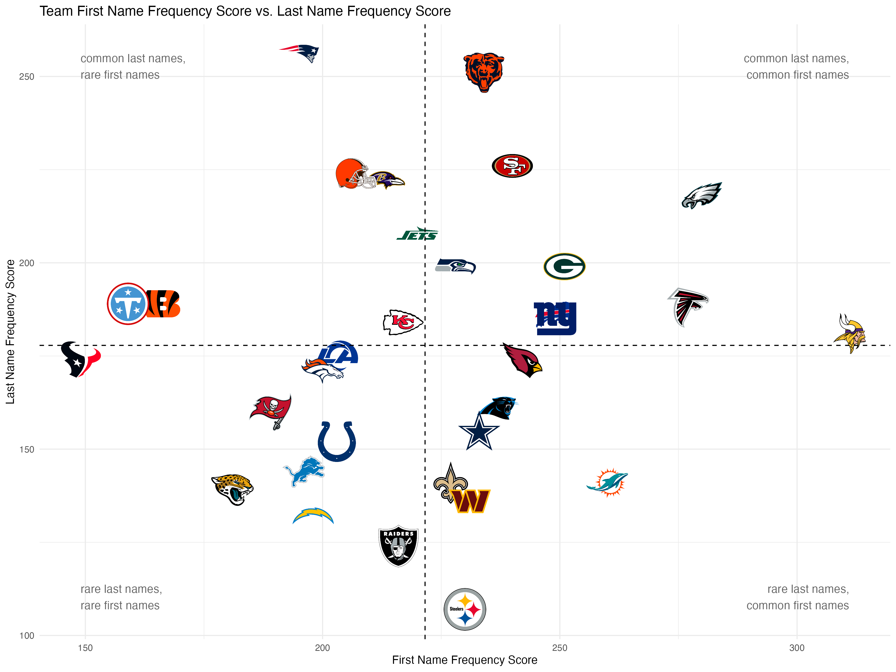

Who is THE player in the NFL?
Thousands upon thousands of people have played in the NFL over its near-century of existence. When you’re dealing with a population that big you’re going to find lots of people with rather unique names. Plaxico Burress, Ladd McConkey, and Booger MacFarland are some that come to mind. But what if I want the least unique guy. The guy whose name I heard makes me go, “Well that sounds like THE player in the NFL.” As it turns out, such an individual does exist who has the most NFL of NFL names.
Finding the most common possible name in the NFL is actually extremely simple. Count the total frequency of each unique first and last names. Then combine the most common first name and the most common last name, and see if that player exists. The problem is, they don’t. The most common first name in the NFL (currently) is Jordan (21 total Jordans) and the most common last name in the NFL is Williams (26 total Willamses). Currently, there is no Jordan Williams at all in the NFL. However, we still have the total number of all first names and last names in the NFL and can use those to find who has the most common name.


Players with the most common full names will be whoever has the highest score when adding the frequencies of their first and last names. The most common possible name, Jordan (n=21) Williams (n=26), would have a name score of 47. Here are the top six real players based on name score:

And there it is. Josh Williams, Tampa Bay running back, is THE NFL player currently playing. His name score of 44 is the highest in the league, and only 3 away from the absolute highest possible. If ever someone poses the question “Who plays in the NFL,” this is the name and image that should pop into your mind if you know anything about NFL football.
Josh Williams may be the NFL player, but which team has the THE NFL roster? We can do the same thing and add up the name scores of every player on every team to see whose roster has the most common total set of names.


The Philadelphia Eagles are the team with the most common first and last names in the NFL with a total name score of 498, the Jacksonville Jaguars have the lowest at 320. The Kansas City Chiefs appear to have the most average NFL names across the league with both their first and last name scores falling around their respective means.
This analysis is not important or difficult in anyway whatsoever. All I’ve done is get the sums some variables (name frequencies) and visualized them in different contexts, and that’s the important part. No one needs to know who THE NFL player, it’s completely useless information, not to mention the player who holds that title, Josh Williams, is buried on the depth chart and likely won’t be around the league passed his rookie contract. No offense to him, that’s just how things work. The goal was to ask a silly useless question, so we got a silly useless answer.